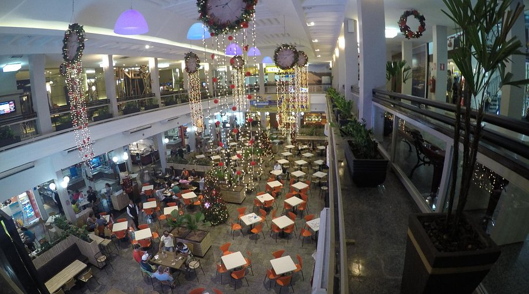
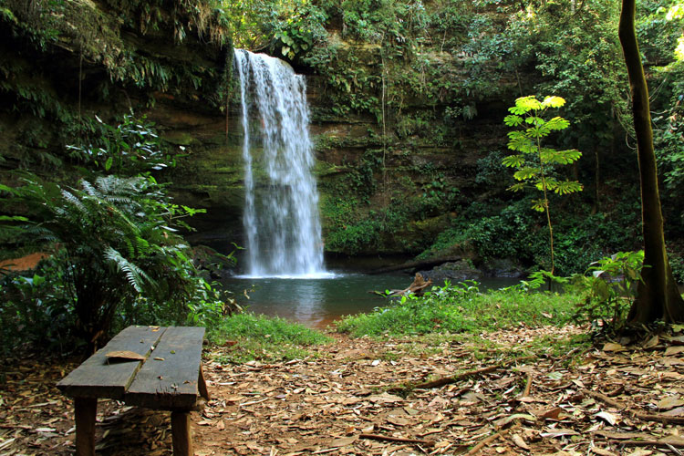

Capim Dourado Shopping

"O Capim Dourado Shopping é um local com atrações para toda a família. Apropriado para passar as férias com as crianças, ir ao cinema e fazer aquela boa refeição em nossa praça de alimentação.

Espaço pequeno para compras com diversidade de restaurantes casuais e de fast-food, além de um cinema
"O Capim Dourado Shopping é um local com atrações para toda a família. Apropriado para passar as férias com as crianças, ir ao cinema e fazer aquela boa refeição em nossa praça de alimentação.

das poucas vezes que eu fui fiquei encantado com a sua beleza

Palmas 30 anos: Praça dos Girassóis é centro de poder, história e lazer para os palmenses

cerca de 80 cachoeiras catalogadas na região serrana. As quedas variam entre 25 e 70 metros de altura, com a maioria localizada em propriedades privadas e oferecendo poços para banho.